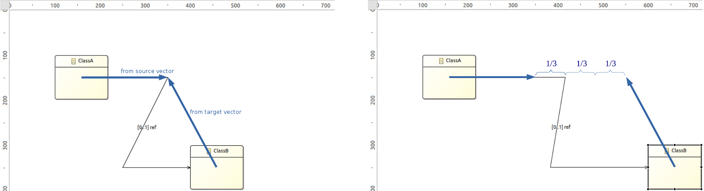
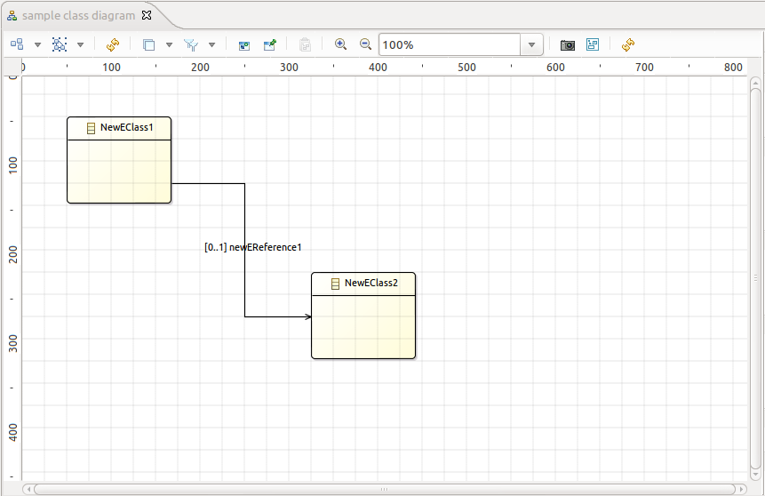
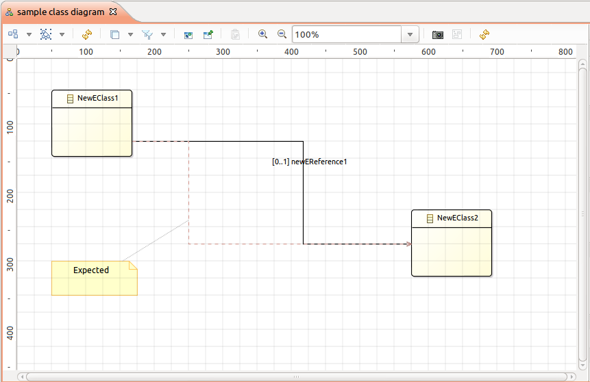
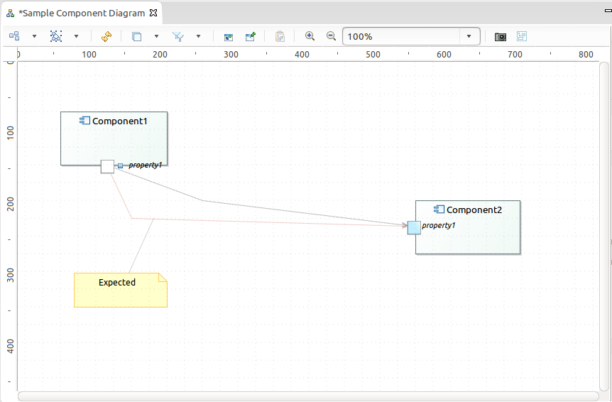
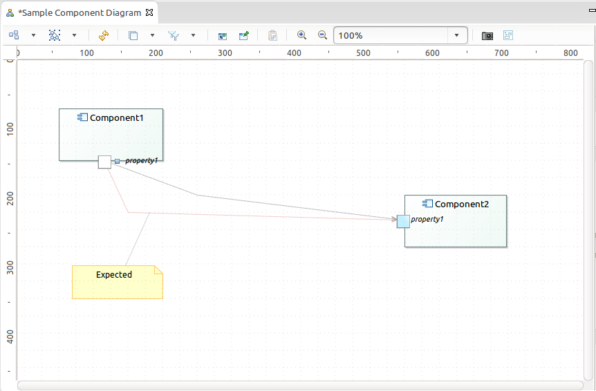

The «ClassB» is shift of 200 pixels, all the bendpoints are moved.
Summary: This evolution is an ergonomics feature. The main goal is to keep, as much as possible, the edges appearance when a node (container or not) is moved. A move of a node should move only the closest segment of the linked edges.
| Version | Status | Date | Authors | Changes |
|---|---|---|---|---|
| v0.1 | DRAFT | 2014-05-16 | lredor | Initial version. |
| v0.2 | PROPOSAL | 2014-05-21 | lredor | Sirius Obeo team review. |
| v0.3 | PROPOSAL | 2014-06-11 | lredor | Another review. |
| v0.4 | PROPOSAL | 2014-08-13 | lredor | Another review. |
Relevant tickets :
Currently, when you move a node, the edges that start from this node or that end to this node are moved too. If these edges have bendpoints, these bendpoints are recomputed according to :
Explanation by example:
The «ClassB» is shift of 200 pixels, all the bendpoints are moved.

The edge «ref» has 3 segments.
The first bendpoint has a ponderation of 1/3 (a move of 66 pixels : 200/3). The new x location is 416 pixels instead of 350 pixels.
The second bendpoint has a ponderation of 2/3 (a move of 133 pixels : 200/3*2). The new x location is 383 pixels instead of 250 pixels.
This behavior is not user friendly. If the user has layed out this edge to avoid other nodes for example, the move of the source or of the target of this edge moves all the layout, all the bendpoints, of this edge.
It will be better to move only the latest segment.
 
Sample with Ecore Tools 2
 

Sample with UML Designer
The retained approach is to complete the existing policies used during move of node to also recompute the edge bendpoints. This solution is compliant with GMF philosophy.
In each concerned policy, we recompute the bendpoints of all incoming and outgoing edges of the host edit part and all its children (border or not) if they are not pinned. The edge for which both source and target are moved are ignored. The current selection is used to determine if both source and target are moved. Several cases:
Example of «stack» for a classic move:
Some specific code already exists in AirResizableEditPolicy to deal with edges with tree routing (old issue reference VP-2932).
This different cases must be tested and correctly addressed:
AirResizableEditPolicy.getMoveCommand()SiriusContainerDropPolicy.getDropCommand()AirResizableEditPolicy.getAlignCommand()AirResizableEditPolicy.getMoveCommand()AirResizableEditPolicy.getMoveCommand()/org.eclipse.sirius.diagram.sequence.ui/src/org/eclipse/sirius/diagram/sequence/ui/tool/internal/edit/part should have a specific AirResizableEditPolicy and SiriusContainerDropPolicy to disable the new behavior.BracketEdgeEditPart has already specific behavior): should directly ignored in AirResizableEditPolicy and SiriusContainerDropPolicyAnother approach will be to use a new ModelChangeTrigger added to the SessionEventBroker. With this approach, we have only one call after the move of the selected nodes. The calculation will be made only with GMF data. This approach was rejected because it does not respect the GMF philosophy.
There is no change in metamodel for this evolution. It only modifies the existing policies.
This evolution does not change any API. There is perhaps some new policies added to handle each kind of move list above.
No user interface change.
This new behavior should be added in the New and Noteworthy documentation. There is no need to document this elsewhere because it became the default behavior.
All combinatorial of «different move cases» need to be tested.
All existing tests should be verify to see if some of them depends on the old behavior. In this case, they should be adapted to the new behavior.